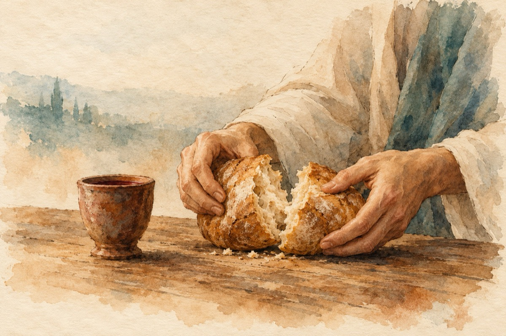

Cina cea de taină
Împărăția cuvintelor adresate de Mântuitor
Înaintea patimilor ce va să fie
Cu adâncă tristețe în fața Apostolilor
A fost că va fi vândut pentru o mică simbrie
Mai întâi de toate spăla-ta picioarele celor prezenți
Cu un gest de prietenie și curățenie sufletească,
Rupând o pâine glăsui;
,,Mâncați, acesta este trupul meu și sângele meu beți”,
,,Și de câte ori faceți aceasta, numele meu îl veți pomeni”
Ne vedem după înviere, ce avea să se înfăptuiască!...
Vasile Groza